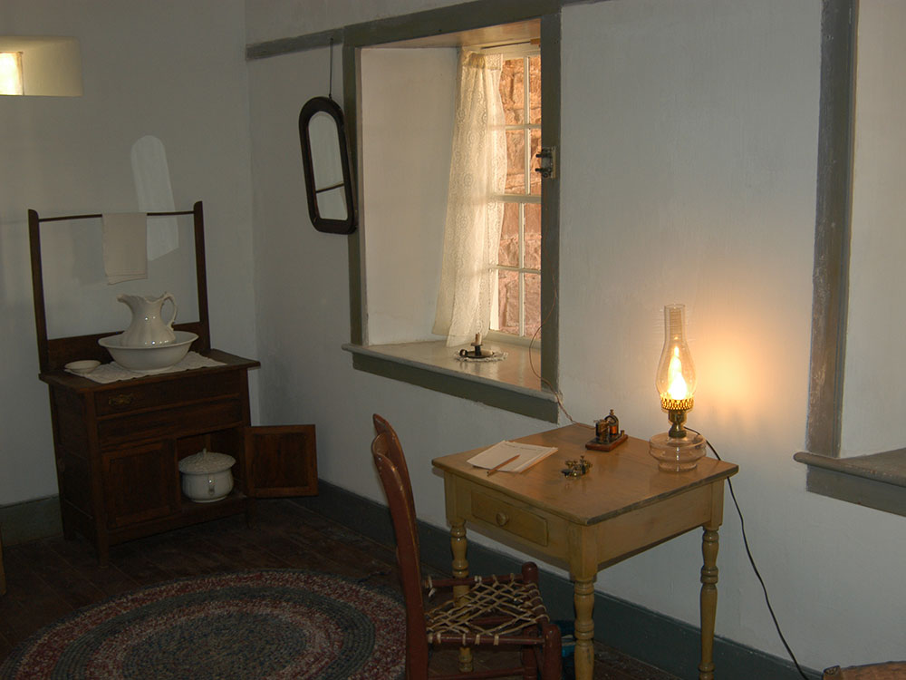

Historic Mormon fort and natural spring site featuring pioneer-era structures, cultural exhibits, and seasonal living history programs.
General Information
Closed: Thanksgiving, Christmas, and New Year’s Day
Children under 16: Free
Federal passes accepted
Not permitted in historic buildings or on Ridge Trail
Must be leashed (max 6 ft) and cleaned up after
How to Get There
From Page, AZ (115 mi): Take US-89 S to Kanab, then follow US-89A E to AZ-389 E and continue to the monument entrance near Fredonia.
Overview
Pipe Spring National Monument protects a rare desert spring in the Arizona Strip that has drawn people for thousands of years, from Ancestral Puebloan and Kaibab Paiute peoples to Mormon pioneers and ranchers. The fortified ranch house known as Winsor Castle, built in 1870 to guard the spring and a Mormon tithing herd, is the centerpiece of the site, and the monument is surrounded by the Kaibab Paiute Indian Reservation. Pipe Spring was set aside as a national monument in 1923 as a memorial to the pioneer era and now interprets the shared and sometimes conflicting stories of Native Americans and settlers. Visitors come for the historic buildings, living history programs, a short desert trail and a look at how the water scarcity shaped the Southwest.
Access
The monument is in northwestern Arizona on AZ-389, about 14 miles west of Fredonia, 14 miles from Kanab, Utah, and about 1.5 hours from Zion National Park's east entrance. Visitors arrive by car on paved roads, and parking is next to the visitor center. Page is about 75 miles east, and St. George, Utah, is roughly 1.25 hours west. The monument is small, with level, short paths, and can be seen in one to two hours, making it an easy stop on a road trip between Zion, Bryce Canyon and the North Rim of the Grand Canyon.
Seasons
The monument is open year-round, and spring and fall are the most comfortable seasons, with the fullest programming. Summer is hot, but the stone fort stays cool inside, and living history demonstrations such as bread-making and ranch chores are offered in the summer months. Winter days are cold and sometimes snowy, and some programs are reduced. The monument is closed on Thanksgiving, Christmas and New Year's Day.
Things to Do
Explore a Historic Oasis on the Arizona Strip
Pipe Spring National Monument preserves the historic Pipe Spring oasis and Fort Winsor, a nineteenth-century ranching outpost located on the Arizona Strip near the Utah border. The monument tells the stories of the Kaibab Band of Paiute Indians, Mormon settlers, ranchers, and travelers who depended upon the reliable spring water that made life possible in this arid landscape.
Tour Historic Fort Winsor
The centerpiece of the monument is Fort Winsor, a fortified stone ranch house constructed in the 1870s. Visitors can tour furnished rooms, historic exhibits, and interpretive displays that illustrate frontier life, ranching operations, and the cultural history of the region.
Learn About Kaibab Paiute Culture
Pipe Spring has been an important gathering place for Indigenous peoples for centuries. Exhibits and interpretive programs highlight the history, traditions, and ongoing presence of the Kaibab Band of Paiute Indians, whose homeland includes the lands surrounding the monument.
Visit the Historic Springs and Gardens
The monument's natural springs transformed the surrounding desert into a valuable oasis. Visitors can explore historic orchards, gardens, and water features while learning how water shaped settlement, agriculture, and daily life in the region.
Experience Living History Demonstrations
Seasonal programs often feature demonstrations of traditional ranching practices, blacksmithing, cooking, livestock care, and other activities that help bring the site's history to life.
Enjoy Scenic Views of the Arizona Strip
The monument sits within a beautiful high-desert landscape surrounded by mesas, grasslands, and distant mountain views. Visitors can enjoy photography, wildlife observation, and peaceful exploration of this unique corner of northern Arizona.
Top Trails
Ridge Trail
Length: Approximately 0.5 miles round trip
Elevation Gain: Minimal
Difficulty: Easy
This short trail climbs to an overlook above the monument, providing scenic views of Pipe Spring, Fort Winsor, the surrounding desert landscape, and nearby Vermilion Cliffs country.
Mesa Trail
Length: Approximately 1 mile round trip
Elevation Gain: Minimal to Moderate
Difficulty: Easy
The trail traverses desert grasslands and provides opportunities to observe native plants, wildlife, and scenic views of the monument's surroundings while learning about the area's geology and ecology.
Spring and Garden Walk
Length: Approximately 0.5 miles round trip
Elevation Gain: Minimal
Difficulty: Easy
This interpretive walk explores the historic spring system, orchards, gardens, and agricultural features that supported generations of Indigenous peoples and settlers in the region.
Fort Winsor Historic Grounds Tour
Length: Approximately 0.3 miles round trip
Elevation Gain: Minimal
Difficulty: Easy
Visitors can explore the historic fort grounds, livestock areas, water systems, and museum exhibits while learning about ranching history, frontier settlement, and the cultural significance of Pipe Spring.
Visitor Centers
The Pipe Spring Visitor Center and museum has exhibits on the Kaibab Paiute, the Mormon settlers and the water that made the site important, along with a bookstore, restrooms and a short film. Rangers lead tours of Winsor Castle and answer questions about the living history programs. The center is open daily except Thanksgiving, Christmas and New Year's Day, and federal passes are accepted, so check the National Park Service website for current hours and fees.
Camping and Lodging
There is no camping or lodging inside the monument, but the Kaibab Paiute Tribe operates an RV park and campground next door. Hotels, motels and restaurants are in Fredonia and in Kanab, Utah, about 20 minutes away, which has a wider selection and the historic Parry Lodge. St. George and Page offer more options 1.25 to 1.5 hours away, and the North Rim of the Grand Canyon has its own lodge and campground. Check each property's website for current availability.
Sources: National Park Service official Pipe Spring National Monument information, including details on Fort Winsor, Kaibab Paiute history, historic springs, ranching heritage, interpretive programs, and visitor amenities.
https://www.nps.gov/pisp/index.htmhttps://www.nps.gov/pisp/index.htm
Additional information verified through National Park Service visitor resources covering historic tours, trails, cultural history, water resources, educational exhibits, and recreational opportunities within Pipe Spring National Monument.
https://www.nps.gov/pisp/planyourvisit/index.htmhttps://www.nps.gov/pisp/planyourvisit/index.htm Additional information from the National Park Service.
This article uses material from the Wikipedia article "Pipe Spring National Monument", which is released under the Creative Commons Attribution-Share-Alike License 3.0.
